20 size
20 size
Product catalogue · PDF
Sản phẩm & catalogue Amos Việt Nam
Cáp thép, sling, ma ní, móc cẩu, master link, spelter socket, xích, cáp vải, dây thừng và bảo hộ lao động – tra cứu theo từng loại và từng size ngay bên dưới, hoặc tải catalogue PDF để lưu trữ và gửi đồng nghiệp.
 1. Trang bìa – Product Catalog 2026
1. Trang bìa – Product Catalog 2026 2. Tri-Flex® – sling cáp thép bện
2. Tri-Flex® – sling cáp thép bện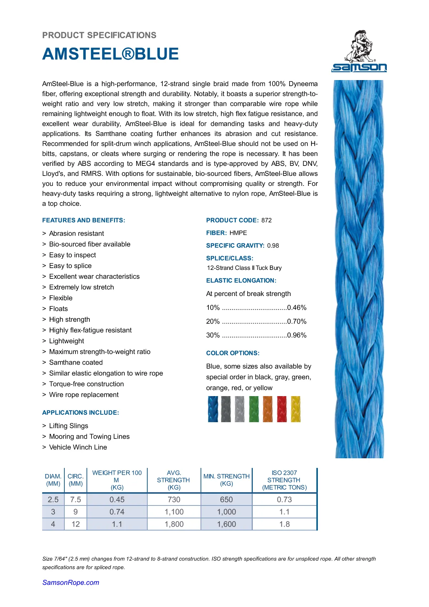
3. AmSteel®-Blue – dây sợi Dyneema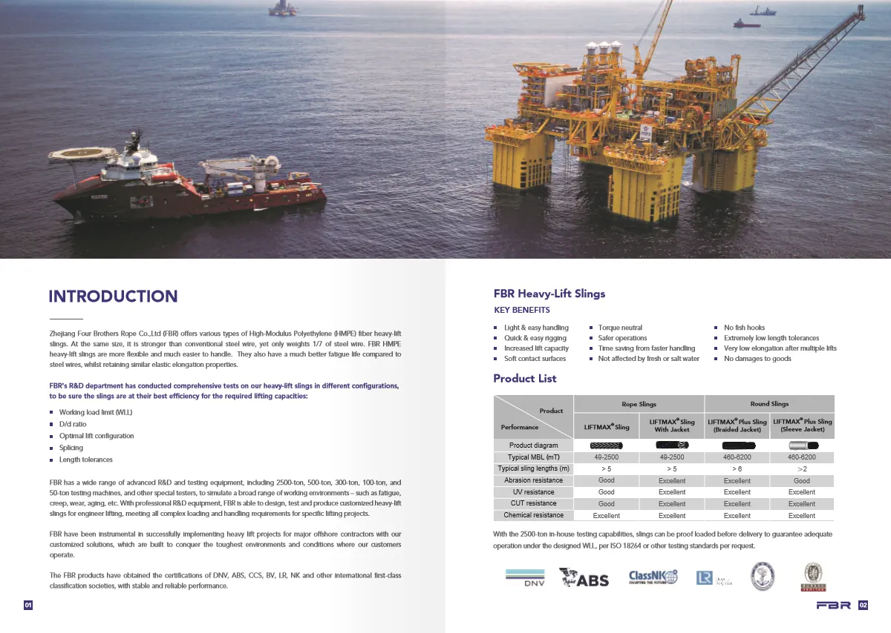
4. FBR – sling nâng hạ tải trọng lớn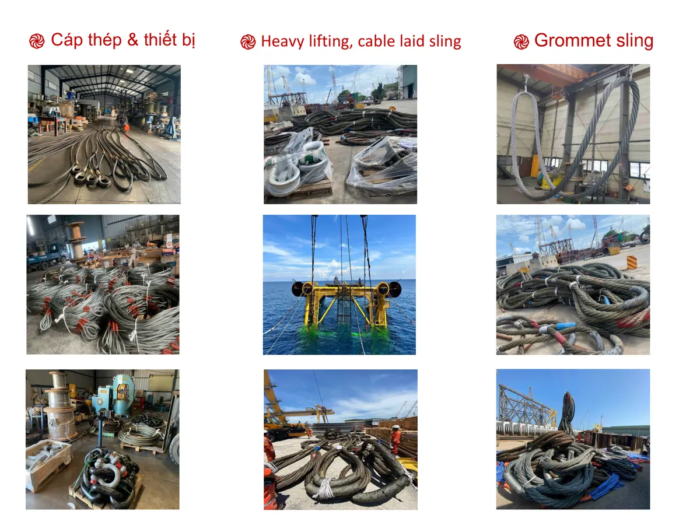
5. Công nghệ cáp thép chuyên dụng 6. Modulift – khung dầm nâng (spreader beam)
6. Modulift – khung dầm nâng (spreader beam)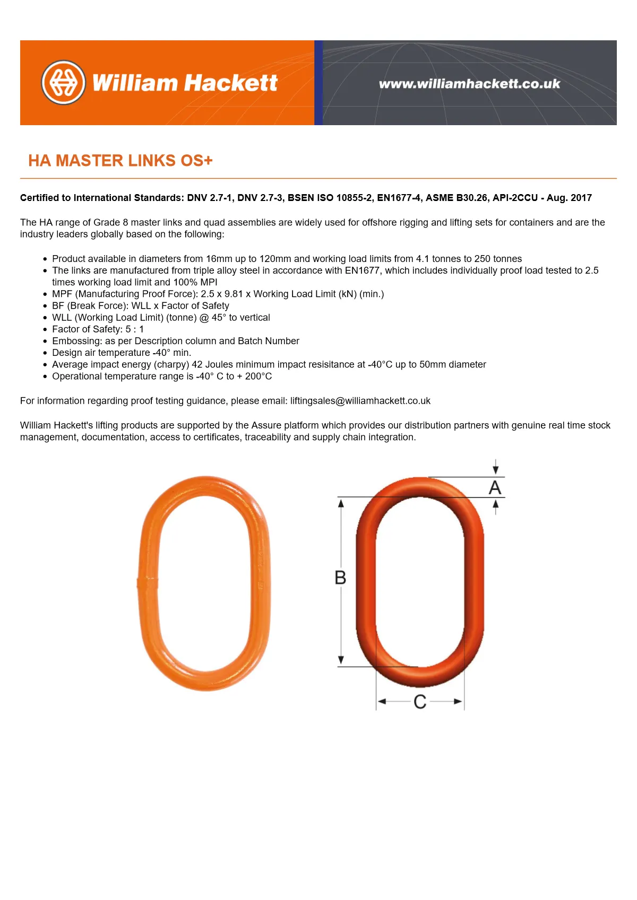
7. William Hackett – master link OS+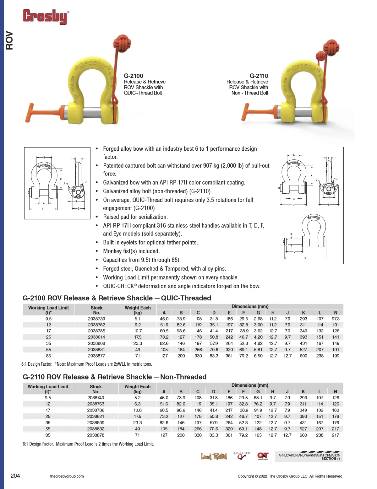
8. Crosby – ma ní ROV 9. Green Pin® – ma ní Bow Shackle BN
9. Green Pin® – ma ní Bow Shackle BN 10. Crosby – móc cẩu ROV L-320R
10. Crosby – móc cẩu ROV L-320R
Tất cả sản phẩm 61 loại · 227 size
20 size
 29 size
29 size
 Theo yêu cầu
Theo yêu cầu
Cáp thép 8 tao
Cáp thép 8 tao
8x19S
Bridon-BekaertUsha MartinKiswire+2
Tiếp xúc puly tốt, mềm. Ứng dụng: cẩu cảng, cẩu tháp, palăng.
Đường kính theo yêu cầu
 25 size
Theo yêu cầu
25 size
Theo yêu cầu
Cáp thép Cáp tao ép (compacted)
Cáp tao ép (compacted)
6xK36WS
Bridon-BekaertUsha MartinKiswire+2
Lực kéo đứt cao, bề mặt nhẵn, bền mỏi. Ứng dụng: cẩu offshore, tời neo, drilling line.
Đường kính theo yêu cầu
Theo yêu cầu
Cáp thép Cáp một tao / spiral strand
Cáp một tao / spiral strand
1x19
Bridon-BekaertUsha MartinKiswire+2
Độ giãn thấp, chống ăn mòn. Ứng dụng: neo, giằng kết cấu, cáp treo.
Đường kính theo yêu cầu
 20 size
20 size
 Theo yêu cầu
Theo yêu cầu
Ma ní – Shackle Ma ní omega · chốt vặn
Ma ní omega chốt vặn
Bow · screw pin
CrosbyGreen PinGunnebo Lifting+1
Bow/anchor shackle chốt vặn cho nâng hạ thông thường và nhiều nhánh.
Kích cỡ theo yêu cầu
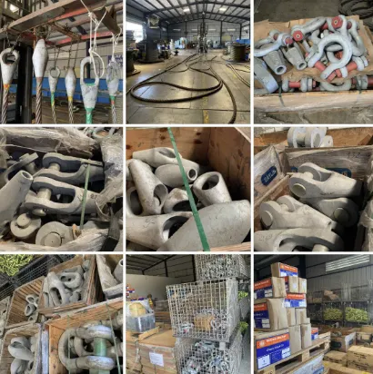
Theo yêu cầuMa ní – Shackle Ma ní chữ D · chốt vặn
Ma ní chữ D chốt vặn
Dee · screw pin
CrosbyGreen PinGunnebo Lifting+1
Dee/chain shackle chốt vặn dùng nối xích, sling một nhánh.
Kích cỡ theo yêu cầu
 Theo yêu cầu
Theo yêu cầu
Ma ní – Shackle Ma ní chữ D · chốt bu lông
Ma ní chữ D chốt bu lông
Dee · bolt type
CrosbyGreen PinGunnebo Lifting+1
Dee shackle chốt bu lông – đai ốc – chốt an toàn cho lắp đặt lâu dài.
Kích cỡ theo yêu cầu
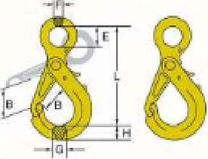
7 size 9 size
9 size
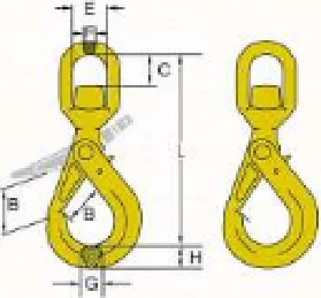
6 size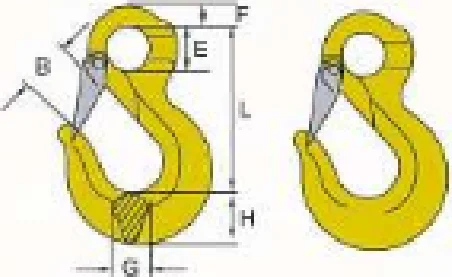
9 size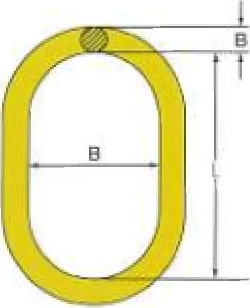
17 size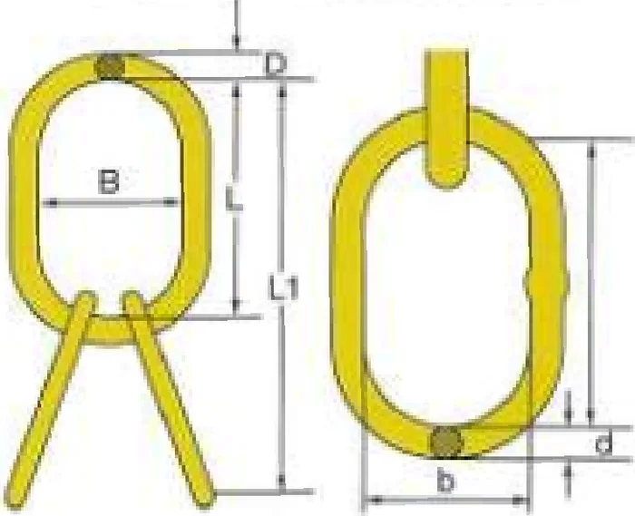
10 size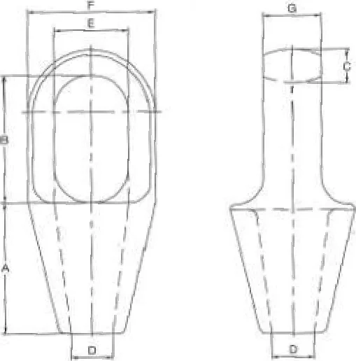
24 size 24 size
24 size
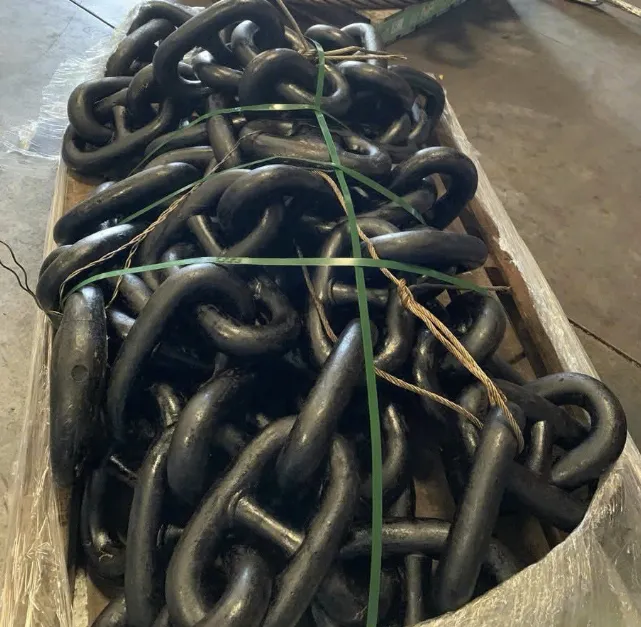
11 size
Theo yêu cầu
Xích & phụ kiện xích Xích hợp kim G100
Xích hợp kim cấp 100 (G100)
G100
Xích cấp 100 cho sling xích tải trọng cao, trọng lượng nhẹ hơn G80 cùng tải.
Kích cỡ theo yêu cầu
 Theo yêu cầu
Theo yêu cầu
Xích & phụ kiện xích Sling xích
Sling xích lắp sẵn 1–4 nhánh
Chain sling
Sling xích lắp sẵn với master link, móc an toàn, khóa nối.
Theo cấu hình
Theo yêu cầu
Xích & phụ kiện xích Xích neo
Xích neo tàu & xích neo offshore
U2 · U3 · R3–R5
Xích neo có ngáng / không ngáng cấp U2, U3; xích neo offshore R3–R5.
Theo yêu cầu
Theo yêu cầu
Xích & phụ kiện xích Xích công nghiệp
Xích mạ kẽm, xích inox, xích đen
Lashing
Cho chằng buộc và ứng dụng công nghiệp.
Theo yêu cầu
Theo yêu cầu
Xích & phụ kiện xích Phụ kiện xích
Khóa nối, ma ní neo, xoay neo
Connecting link · Swivel
Phụ kiện nối xích và hệ neo.
Theo yêu cầu
 8 size
8 size
Theo yêu cầu
8 size
8 size
Theo yêu cầu
Cáp vải & chằng hàng Lưới cẩu
Lưới cẩu hàng – Cargo net
Cargo net
YokeGunnebo LiftingTechnotex
Cho hàng rời, bao kiện tại cảng và trên tàu.
Theo yêu cầu
Theo yêu cầu
Cáp vải & chằng hàng Chằng hàng
Dây chằng hàng tăng đơ – Ratchet lashing
EN 12195-2
YokeGunnebo LiftingTechnotex
Dây chằng hàng tăng đơ cho vận chuyển đường bộ, đường biển và kho bãi.
Theo yêu cầu
Theo yêu cầu
Cáp vải & chằng hàng Bảo vệ sling
Ống bọc bảo vệ, tấm bọc góc chống cắt
Protection
Bảo vệ sling khi tiếp xúc cạnh sắc.
Theo yêu cầu
Theo yêu cầu
 Theo yêu cầu
Theo yêu cầu
 Theo yêu cầu
Theo yêu cầu
Sling cáp thép Heavy lifting
Cable laid sling
Heavy lift
Bện từ 6 cáp thép quanh một lõi cáp, chịu tải rất lớn cho lifting package kết cấu nặng.
Thiết kế theo tải dự án
 Theo yêu cầu
Theo yêu cầu
Sling cáp thép Heavy lifting
Grommet sling
Heavy lift
Vòng cáp liền không mối nối, hiệu suất cao, dùng trên móc lớn và ma ní lớn.
Thiết kế theo tải dự án
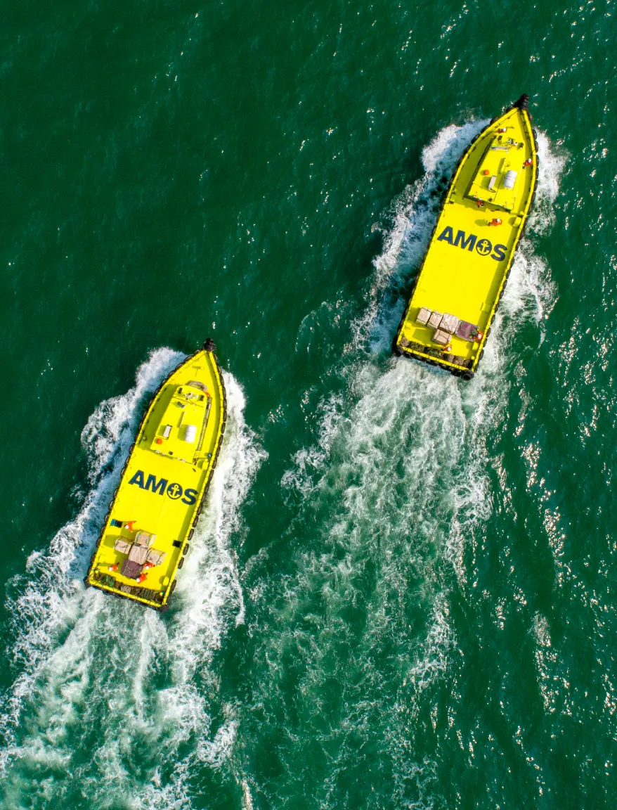
Theo yêu cầuDây thừng PP rope
Dây PP (polypropylene)
PP rope
SamsonTeufelberger
Nhẹ, nổi trên nước; neo buộc tàu nhỏ, chằng buộc, dây kéo. 3, 8, 12 tao; cuộn 200 m hoặc cắt theo chiều dài.
Đường kính theo yêu cầu
Theo yêu cầu
Dây thừng PE rope
Dây PE / PP-PE
PE rope
SamsonTeufelberger
Bền với UV và nước biển; ngư nghiệp, neo buộc, dây quấn đệm va. 3, 8, 12 tao; cuộn 200 m hoặc cắt theo chiều dài.
Đường kính theo yêu cầu
Theo yêu cầu
Dây thừng Nylon rope
Dây Nylon (polyamide)
Nylon rope
SamsonTeufelberger
Độ đàn hồi cao, hấp thụ lực giật – dây neo buộc tàu, dây kéo. 3, 8, 12 tao; cuộn 200 m hoặc cắt theo chiều dài.
Đường kính theo yêu cầu
Theo yêu cầu
Dây thừng Polyester rope
Dây Polyester
Polyester rope
SamsonTeufelberger
Độ giãn thấp, chống mài mòn và UV; neo buộc, dây tời. 3, 8, 12 tao; cuộn 200 m hoặc cắt theo chiều dài.
Đường kính theo yêu cầu
Theo yêu cầu
Dây thừng Manila rope
Dây Manila
Manila rope
SamsonTeufelberger
Sợi tự nhiên, bám tay tốt; trang trí boong, công việc hàng hải. 3, 8, 12 tao; cuộn 200 m hoặc cắt theo chiều dài.
Đường kính theo yêu cầu
Theo yêu cầu
Dây thừng Dyneema rope
Dây Dyneema (HMPE)
Dyneema rope
SamsonTeufelberger
Siêu nhẹ, bền tương đương cáp thép cùng đường kính, nổi trên nước. 3, 8, 12 tao; cuộn 200 m hoặc cắt theo chiều dài.
Đường kính theo yêu cầu
Theo yêu cầu
Phụ kiện nâng hạ khác Turnbuckle
Tăng đơ (turnbuckle)
Turnbuckle
Móc – móc, mắt – mắt, ngàm – ngàm; mạ kẽm hoặc inox 304/316.
Theo yêu cầu
Theo yêu cầu
Phụ kiện nâng hạ khác DIN 580 / 582
Bu lông mắt, mắt nâng
DIN 580 / 582
Eye bolt, eye nut, bu lông cường độ cao, ty ren, bu lông neo móng.
Theo yêu cầu
Theo yêu cầu
Phụ kiện nâng hạ khác Hoist
Pa lăng xích, pa lăng lắc tay, pa lăng điện
Hoist
Cho bảo trì nhà xưởng và tàu; có thể thử tải và cấp chứng chỉ trước bàn giao.
Theo yêu cầu
Theo yêu cầu
Phụ kiện nâng hạ khác Snatch block
Ròng rọc, puly cáp
Snatch block
Ròng rọc mở má, ròng rọc đơn – đôi, puly cho tời và cẩu.
Theo yêu cầu
 Theo yêu cầu
Theo yêu cầu
Phụ kiện nâng hạ khác Clip · Ferrule · Thimble
Ốc siết cáp, ống bấm, lót cáp
Clip · Ferrule · Thimble
Wire rope clip, ống nhôm, ống thép bấm cáp, khóa cáp, thimble.
Theo yêu cầu
Theo yêu cầu
Phụ kiện nâng hạ khác Mooring
Dây bọc tàu / dây neo buộc
Mooring
Dây neo buộc tàu, dây quấn đệm va, dây PP, PE, nylon cho cảng và tàu biển.
Theo yêu cầu
 Theo yêu cầu
Theo yêu cầu
Bảo hộ lao động Helmet
Mũ bảo hộ
Helmet
Mũ công trường, mũ có quai cằm cho làm việc trên cao và offshore.
Theo bộ / theo size
Theo yêu cầu
Bảo hộ lao động Gloves
Găng tay rigging
Gloves
Găng tay chống va đập (impact), chống cắt cho rigging và cáp thép.
Theo bộ / theo size
Theo yêu cầu
Bảo hộ lao động FR coverall
Quần áo bảo hộ, chống cháy
FR coverall
Áo phản quang, quần áo chống cháy cho dầu khí và chữa cháy.
Theo bộ / theo size
Theo yêu cầu
Bảo hộ lao động Safety boots
Giày, ủng bảo hộ
Safety boots
Mũi thép chống đinh, chống trơn trượt, chống dầu.
Theo bộ / theo size
Theo yêu cầu
Bảo hộ lao động Full body harness
Dây an toàn toàn thân
Full body harness
Harness, dây giảm chấn, móc khóa cho làm việc trên cao.
Theo bộ / theo size
Theo yêu cầu
Bảo hộ lao động Eye & ear
Kính & bảo vệ thính giác
Eye & ear
Kính bảo hộ, mặt nạ, nút tai/chụp tai chống ồn.
Theo bộ / theo size
Theo yêu cầu
Sản phẩm khác Winch
Tời điện di động
Winch
Tời công suất vừa và lớn cho nâng hạ, đóng tàu, công trình.
Theo yêu cầu
Theo yêu cầu
Sản phẩm khác Cutter
Kìm cắt cáp thép
Cutter
Kìm thủy lực, kìm cắt cáp chính xác.
Theo yêu cầu
Theo yêu cầu
Sản phẩm khác Plate clamp
Kẹp tôn chịu lực
Plate clamp
Kẹp tôn đứng, kẹp tôn ngang, kẹp dầm.
Theo yêu cầu
Theo yêu cầu
Sản phẩm khác Safety net
Lưới che nắng, lưới an toàn
Safety net
Lưới bảo vệ mặt bằng, chống bụi, lưới an toàn công trường.
Theo yêu cầu
Theo yêu cầu
Sản phẩm khác Cable tray
Thang cáp, máng cáp
Cable tray
Thang cáp, máng cáp cách điện cho hệ thống điện, nhà xưởng.
Theo yêu cầu
Theo yêu cầu
Sản phẩm khác Lubricant
Mỡ bôi trơn cáp thép
Lubricant
Mỡ và dầu bôi trơn, chống ăn mòn cho môi trường biển.
Theo yêu cầu
Theo yêu cầu
Sản phẩm khác ID tag
Thẻ WLL, ống bọc bảo vệ
ID tag
Thẻ nhận dạng sling, ống bọc chống cắt, tấm bảo vệ góc cạnh tải.
Theo yêu cầu
 Theo yêu cầu
Theo yêu cầu
Dịch vụ thử tải & kỹ thuật Load test
Thử tải sling, ma ní, pa lăng
Load test
Thử tải trên bệ thử ngang/đứng, gắn thẻ và cấp chứng chỉ thử tải.
Dịch vụ
Theo yêu cầu
Dịch vụ thử tải & kỹ thuật Fabrication
Thiết kế, chế tạo sling cáp thép
Fabrication
Bấm chì, tết tay, cable laid, grommet theo yêu cầu dự án.
Dịch vụ
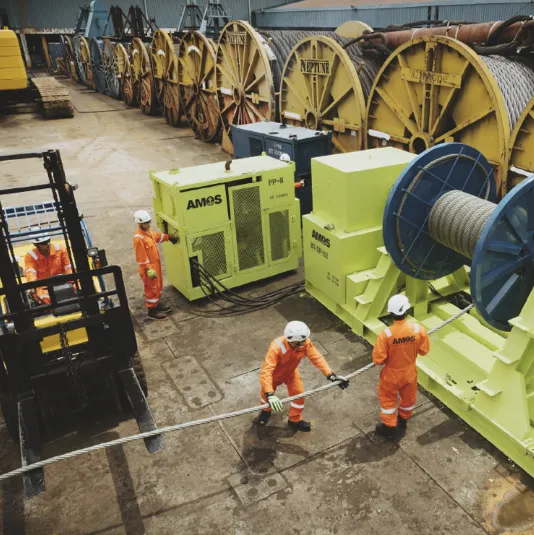
Theo yêu cầuDịch vụ thử tải & kỹ thuật Spooling
Cuốn cáp, bảo dưỡng cáp
Spooling
Cuốn chuyển tang có kiểm soát lực căng, bảo dưỡng cáp tời.
Dịch vụ
 Theo yêu cầu
Theo yêu cầu
Dịch vụ thử tải & kỹ thuật Rental
Cho thuê máy móc, thiết bị
Container · Loadcell · Máy thử tải
Cho thuê container, loadcell, máy thử tải theo ngày, tuần hoặc theo dự án.
Dịch vụ
| Đường kính | Inch | MBL (kN) | MBL (tấn) | Chi tiết |
|---|---|---|---|---|
| Ø8 mm | 5/16" | 44.7 | 4.6 | Xem |
| Ø10 mm | 3/8" | 69.8 | 7.1 | Xem |
| Ø12 mm | – | 100.5 | 10.2 | Xem |
| Ø13 mm | 1/2" | 117.9 | 12 | Xem |
| Ø14 mm | 9/16" | 136.8 | 13.9 | Xem |
| Ø16 mm | 5/8" | 178.6 | 18.2 | Xem |
| Ø18 mm | – | 226.1 | 23.1 | Xem |
| Ø19 mm | 3/4" | 251.9 | 25.7 | Xem |
| Ø20 mm | – | 279.1 | 28.5 | Xem |
| Ø22 mm | 7/8" | 337.7 | 34.4 | Xem |
| Ø24 mm | – | 401.9 | 41 | Xem |
| Ø26 mm | 1" | 471.7 | 48.1 | Xem |
| Ø28 mm | 1-1/8" | 547 | 55.8 | Xem |
| Ø30 mm | – | 628 | 64 | Xem |
| Ø32 mm | 1-1/4" | 714.5 | 72.9 | Xem |
| Ø34 mm | – | 806.6 | 82.3 | Xem |
| Ø35 mm | 1-3/8" | 854.8 | 87.2 | Xem |
| Ø36 mm | – | 904.3 | 92.2 | Xem |
| Ø38 mm | 1-1/2" | 1007.6 | 102.7 | Xem |
| Ø40 mm | – | 1116.4 | 113.8 | Xem |
| Đường kính | Inch | MBL (kN) | MBL (tấn) | Chi tiết |
|---|---|---|---|---|
| Ø10 mm | 3/8" | 69.8 | 7.1 | Xem |
| Ø12 mm | – | 100.5 | 10.2 | Xem |
| Ø13 mm | 1/2" | 117.9 | 12 | Xem |
| Ø14 mm | 9/16" | 136.8 | 13.9 | Xem |
| Ø16 mm | 5/8" | 178.6 | 18.2 | Xem |
| Ø18 mm | – | 226.1 | 23.1 | Xem |
| Ø19 mm | 3/4" | 251.9 | 25.7 | Xem |
| Ø20 mm | – | 279.1 | 28.5 | Xem |
| Ø22 mm | 7/8" | 337.7 | 34.4 | Xem |
| Ø24 mm | – | 401.9 | 41 | Xem |
| Ø26 mm | 1" | 471.7 | 48.1 | Xem |
| Ø28 mm | 1-1/8" | 547 | 55.8 | Xem |
| Ø30 mm | – | 628 | 64 | Xem |
| Ø32 mm | 1-1/4" | 714.5 | 72.9 | Xem |
| Ø34 mm | – | 806.6 | 82.3 | Xem |
| Ø35 mm | 1-3/8" | 854.8 | 87.2 | Xem |
| Ø36 mm | – | 904.3 | 92.2 | Xem |
| Ø38 mm | 1-1/2" | 1007.6 | 102.7 | Xem |
| Ø40 mm | – | 1116.4 | 113.8 | Xem |
| Ø42 mm | – | 1230.8 | 125.5 | Xem |
| Ø44 mm | 1-3/4" | 1350.9 | 137.8 | Xem |
| Ø46 mm | – | 1476.5 | 150.6 | Xem |
| Ø48 mm | 1-7/8" | 1607.6 | 163.9 | Xem |
| Ø50 mm | – | 1744.4 | 177.9 | Xem |
| Ø52 mm | 2" | 1886.7 | 192.4 | Xem |
| Ø54 mm | 2-1/8" | 2034.7 | 207.5 | Xem |
| Ø56 mm | – | 2188.2 | 223.1 | Xem |
| Ø57 mm | 2-1/4" | 2267 | 231.2 | Xem |
| Ø60 mm | 2-3/8" | 2511.9 | 256.1 | Xem |
| Đường kính | Inch | MBL (kN) | MBL (tấn) | Chi tiết |
|---|---|---|---|---|
| Ø10 mm | 3/8" | 70.6 | 7.2 | Xem |
| Ø12 mm | – | 101.6 | 10.4 | Xem |
| Ø13 mm | 1/2" | 119.2 | 12.2 | Xem |
| Ø14 mm | 9/16" | 138.3 | 14.1 | Xem |
| Ø16 mm | 5/8" | 180.6 | 18.4 | Xem |
| Ø18 mm | – | 228.6 | 23.3 | Xem |
| Ø19 mm | 3/4" | 254.7 | 26 | Xem |
| Ø20 mm | – | 282.2 | 28.8 | Xem |
| Ø22 mm | 7/8" | 341.5 | 34.8 | Xem |
| Ø24 mm | – | 406.4 | 41.4 | Xem |
| Ø26 mm | 1" | 477 | 48.6 | Xem |
| Ø28 mm | 1-1/8" | 553.2 | 56.4 | Xem |
| Ø30 mm | – | 635 | 64.8 | Xem |
| Ø32 mm | 1-1/4" | 722.5 | 73.7 | Xem |
| Ø34 mm | – | 815.7 | 83.2 | Xem |
| Ø35 mm | 1-3/8" | 864.4 | 88.1 | Xem |
| Ø36 mm | – | 914.5 | 93.3 | Xem |
| Ø38 mm | 1-1/2" | 1018.9 | 103.9 | Xem |
| Ø40 mm | – | 1129 | 115.1 | Xem |
| Ø42 mm | – | 1244.7 | 126.9 | Xem |
| Ø44 mm | 1-3/4" | 1366 | 139.3 | Xem |
| Ø46 mm | – | 1493 | 152.2 | Xem |
| Ø48 mm | 1-7/8" | 1625.7 | 165.8 | Xem |
| Ø50 mm | – | 1764 | 179.9 | Xem |
| Ø52 mm | 2" | 1907.9 | 194.6 | Xem |
| Cỡ danh nghĩa | ≈ mm | WLL (tấn) | Chi tiết |
|---|---|---|---|
| 3/16" | 4.8 | 0.33 | Xem |
| 1/4" | 6.4 | 0.5 | Xem |
| 5/16" | 7.9 | 0.75 | Xem |
| 3/8" | 9.5 | 1 | Xem |
| 7/16" | 11.1 | 1.5 | Xem |
| 1/2" | 12.7 | 2 | Xem |
| 5/8" | 15.9 | 3.25 | Xem |
| 3/4" | 19 | 4.75 | Xem |
| 7/8" | 22.2 | 6.5 | Xem |
| 1" | 25.4 | 8.5 | Xem |
| 1-1/8" | 28.6 | 9.5 | Xem |
| 1-1/4" | 31.8 | 12 | Xem |
| 1-3/8" | 34.9 | 13.5 | Xem |
| 1-1/2" | 38.1 | 17 | Xem |
| 1-3/4" | 44.4 | 25 | Xem |
| 2" | 50.8 | 35 | Xem |
| 2-1/2" | 63.5 | 55 | Xem |
| 3" | 76.2 | 85 | Xem |
| 3-1/2" | 88.9 | 120 | Xem |
| 4" | 101.6 | 150 | Xem |
| Mã (Code) | WLL (tấn)* | Cỡ xích (mm) | L | B | E | F | G | H | Khối lượng (kg) |
|---|---|---|---|---|---|---|---|---|---|
| OBK-6-8 | 1.12 | 6 | 103 | 26 | 22 | 9 | 14 | 17 | 0.4 |
| OBK-7/8-8 | 2.0 | 7/8 | 135 | 37 | 25 | 10 | 20 | 22 | 0.8 |
| OBK-10-8 | 3.2 | 10 | 168 | 47 | 32 | 13 | 22 | 29 | 1.3 |
| OBK-13-8 | 5.4 | 13 | 201 | 54 | 40 | 15 | 27 | 35 | 2.3 |
| OBK-16-8 | 8.0 | 16 | 249 | 68 | 56 | 19 | 29 | 43 | 4.0 |
| OBK-18/20-8 | 12.5 | 19 | 293 | 73 | 60 | 22 | 37 | 48 | 7.5 |
| OBK-22-8 | 15.5 | 22 | 335 | 87 | 70 | 24 | 40 | 57 | 10.0 |
| Mã (Code) | WLL (tấn)* | Cỡ xích (mm) | L | B | E | F | G | H | Khối lượng (kg) |
|---|---|---|---|---|---|---|---|---|---|
| BK-6-8 | 1.12 | 6 | 109 | 29 | 22 | 10 | 15 | 21 | 0.5 |
| BK-7/8-8 | 2.0 | 7/8 | 137 | 38 | 25 | 11 | 17 | 23 | 0.8 |
| BK-10-10 | 4.0 | 10 | 168 | 44 | 34 | 13 | 21 | 30 | 1.5 |
| BK-13-10 | 6.7 | 13 | 207 | 54 | 44 | 16 | 30 | 39 | 2.8 |
| BK-16-10 | 10.0 | 16 | 253 | 62 | 56 | 20 | 37 | 49 | 5.6 |
| BK-18/20-10 | 16.0 | 19 | 290 | 68 | 60 | 22 | 42 | 63 | 8.3 |
| BK-22-8 | 15.5 | 22 | 320 | 80 | 70 | 24 | 47 | 62 | 11.2 |
| BK-26-8 | 21.6 | 26 | 345 | 100 | 80 | 25 | 50 | 68 | 14.5 |
| BK-28-8 | 25.0 | 28 | 400 | 120 | 90 | 27 | 62 | 81 | 22.0 |
| Mã (Code) | WLL (tấn)* | Cỡ xích (mm) | L | B | E | F | G | H | Khối lượng (kg) |
|---|---|---|---|---|---|---|---|---|---|
| BKL-6-8 | 1.12 | 6 | 149 | 28 | 23 | 11 | 15 | 21 | 0.6 |
| BKL-7/8-8 | 2.0 | 7/8 | 183 | 37 | 27 | 12 | 17 | 23 | 1.1 |
| BKL-10-10 | 4.0 | 10 | 218 | 44 | 36 | 15 | 21 | 30 | 2.0 |
| BKL-13-10 | 6.7 | 13 | 280 | 54 | 47 | 19 | 30 | 39 | 3.8 |
| BKL-16-10 | 10.0 | 16 | 343 | 62 | 57 | 22 | 37 | 49 | 7.1 |
| BKL-18/20-10 | 16.0 | 19 | 367 | 69 | 70 | 26 | 42 | 63 | 11.1 |
| Mã (Code) | WLL (tấn)* | Cỡ xích (mm) | L | B | E | F | G | H | Khối lượng (kg) |
|---|---|---|---|---|---|---|---|---|---|
| EKN-6-8 | 1.12 | 6 | 94 | 24 | 22 | 10 | 17 | 19 | 0.4 |
| EKN-7/8-8 | 2.0 | 7/8 | 105 | 28 | 25 | 11.5 | 17 | 22 | 0.5 |
| EKN-10-10 | 3.2 | 10 | 131 | 37 | 32 | 13.5 | 20 | 29 | 0.9 |
| EKN-13-10 | 5.4 | 13 | 161 | 42 | 40 | 17.5 | 27 | 36 | 1.8 |
| EKN-16-10 | 8.0 | 16 | 197 | 52 | 50 | 22 | 34 | 44 | 3.4 |
| EKN-18/20-10 | 12.5 | 18/20 | 229 | 60 | 60 | 26 | 41 | 51 | 5.2 |
| EKN-22-8 | 15.5 | 22 | 269 | 77 | 64 | 31 | 42 | 67 | 9.4 |
| EKN-26-8 | 21.6 | 26 | 301 | 81 | 66 | 32 | 51 | 75 | 12.6 |
| EKN-32-8 | 32.0 | 32 | 333 | 93 | 76 | 38 | 61 | 80 | 17.9 |
| WLL (tấn) | Kích thước (mm) | |||||
|---|---|---|---|---|---|---|
| Mã (Code) | EN 1677-4 β 0–45°** | ASTM A952 SF 5:1 | L | B | D | Khối lượng (kg) |
| M-6-10 | 1.25 | 1.5 | 100 | 60 | 11 | 0.2 |
| M-86-10 | 2.5 | 3.2 | 120 | 70 | 14 | 0.4 |
| M-108-10 | 4 | 5.2 | 140 | 80 | 17 | 0.8 |
| M-13-10 | 5.4 | 5.6 | 150 | 90 | 19 | 1.0 |
| M-1310-10 | 7.5 | 8 | 160 | 95 | 22 | 1.5 |
| M-1613-10 | 10 | 13.6 | 190 | 110 | 25 | 2.3 |
| M-19-10 | 12 | 16 | 200 | 120 | 30 | 3.5 |
| M-2016-10 | 17 | 20.6 | 240 | 140 | 34 | 5.3 |
| M-2220-10 | 25 | 30.9 | 250 | 150 | 38 | 7 |
| M-2622-10 | 28 | 32 | 250 | 150 | 40 | 8 |
| M-32-10 | 33 | 38.6 | 300 | 180 | 45 | 12 |
| M-3226-10 | 43 | 46.6 | 300 | 200 | 50 | 15 |
| M-3632-10 | 56 | 65 | 350 | 200 | 55 | 21 |
| M-4536-10 | 70 | 72.7 | 375 | 210 | 60 | 26 |
| M-90T-10 | 90 | 100 | 450 | 250 | 70 | 43 |
| M-100T-10 | 100 | 100 | 450 | 260 | 80 | 57 |
| M-125T-10** | 125 | 125 | 450 | 260 | 80 | 57 |
| WLL (tấn) | Kích thước (mm) | |||||||||
|---|---|---|---|---|---|---|---|---|---|---|
| Mã (Code) | EN 1677-4 β 0–45°** | ASTM A952 SF 5:1 | L1 | L | B | D | l | b | d | Khối lượng (kg) |
| MT-6-10*** | 3.5 | 5 | 270 | 150 | 90 | 19 | 120 | 70 | 14 | 1.8 |
| MT-8-10*** | 5.2 | 8 | 300 | 160 | 95 | 22 | 140 | 80 | 17 | 3.0 |
| MT-9-10 | – | 9.7 | 340 | 190 | 110 | 25 | 150 | 90 | 19 | 4.3 |
| MT-10-10*** | 11.5 | 16 | 360 | 200 | 120 | 30 | 160 | 95 | 22 | 6.5 |
| MT-13-10*** | 17 | 26 | 450 | 250 | 150 | 40 | 200 | 120 | 30 | 15 |
| MT-16-10*** | 28 | 35 | 500 | 300 | 200 | 50 | 200 | 120 | 32 | 23 |
| MT-20-10*** | 35 | 50 | 550 | 300 | 200 | 55 | 250 | 150 | 38 | 33 |
| MT-22-10 | 53 | 75 | 610 | 350 | 200 | 60 | 260 | 140 | 45 | 46 |
| MT-26-10 | 70 | 100 | 730 | 450 | 250 | 70 | 280 | 160 | 50 | 71 |
| MT-32-10 | 90 | 125 | 750 | 450 | 260 | 80 | 280 | 160 | 55 | 91 |
| Art. no. | Type No. | Cáp (mm) | Cáp (inch) | MBL (tấn) | A (mm) | B (mm) | C (mm) | D (mm) | E (mm) | F (mm) | G (mm) | Khối lượng (kg) |
|---|---|---|---|---|---|---|---|---|---|---|---|---|
| 4700290 | 290 | 6-7 | 1/4 | 3 | 51 | 46 | 11 | 8 | 20 | 36 | 13 | 0.3 |
| 4700292 | 292 | 8-10 | 3/8 | 6 | 51 | 52 | 14 | 11 | 24 | 43 | 16 | 0.4 |
| 4700294 | 294 | 11-13 | 1/2 | 12 | 64 | 59 | 18 | 14 | 29 | 51 | 22 | 0.8 |
| 4700296 | 296 | 14-16 | 5/8 | 24 | 75 | 65 | 24 | 18 | 35 | 67 | 25 | 1.4 |
| 4700298 | 298 | 18-19 | 3/4 | 32 | 89 | 78 | 27 | 21 | 41 | 76 | 32 | 2.1 |
| 4700201 | 201 | 20-22 | 7/8 | 45 | 101 | 90 | 33 | 24 | 47 | 92 | 38 | 4 |
| 4700204 | 204 | 24-27 | 1 | 70 | 114 | 103 | 36 | 28 | 57 | 104 | 44 | 6 |
| 4700207 | 207 | 27-30 | 1 1/8 | 100 | 127 | 116 | 39 | 32 | 63 | 114 | 51 | 7 |
| 4700212 | 212 | 31-36 | 1 1/4 - 1 3/8 | 125 | 139 | 130 | 43 | 38 | 70 | 127 | 57 | 11 |
| 4700215 | 215 | 37-39 | 1 1/2 | 150 | 152 | 155 | 51 | 41 | 79 | 136 | 63 | 13 |
| 4700217 | 217 | 40-42 | 1 5/8 | 200 | 165 | 171 | 54 | 44 | 82 | 146 | 70 | 17 |
| 4700219 | 219 | 43-48 | 1 3/4 - 1 7/8 | 260 | 190 | 198 | 55 | 51 | 89 | 171 | 76 | 24 |
| 4700222 | 222 | 49-54 | 2 - 2 1/8 | 280 | 216 | 224 | 62 | 57 | 96 | 193 | 82 | 37 |
| 4700224 | 224 | 55-60 | 2 1/4 - 2 3/8 | 360 | 228 | 247 | 73 | 63 | 108 | 216 | 92 | 56 |
| 4700226 | 226 | 61-68 | 2 1/2 - 2 5/8 | 450 | 248 | 270 | 79 | 73 | 140 | 241 | 102 | 65 |
| 4700227 | 227 | 69-75 | 2 3/4 - 2 7/8 | 480 | 279 | 286 | 76 | 79 | 159 | 273 | 124 | 93 |
| 4700228 | 228 | 76-80 | 3 - 3 1/8 | 520 | 305 | 298 | 83 | 86 | 171 | 292 | 133 | 110 |
| 4700229 | 229 | 81-86 | 3 1/4 - 3 3/8 | 600 | 330 | 311 | 102 | 92 | 184 | 311 | 146 | 142 |
| 4700230 | 230 | 87-93 | 3 1/2 - 3 5/8 | 700 | 356 | 330 | 102 | 99 | 197 | 330 | 159 | 170 |
| 4700231 | 231 | 94-102 | 3 3/4 - 4 | 875 | 381 | 356 | 108 | 108 | 216 | 362 | 178 | 225 |
| 4700233 | 233 | 108-115 | 4 1/2 | 1100 | 450 | 425 | 120 | 125 | 235 | 405 | 190 | 340 |
| 4700240 | 240 | 122-130 | 5 | 1250 | 500 | 475 | 120 | 138 | 260 | 515 | 210 | 555 |
| 4700250 | 250 | 140-155 | 5 1/2 - 6 | 1400 | 580 | 550 | 150 | 160 | 300 | 510 | 250 | 850 |
| 4700260 | 260 | 158-167 | 6 1/2 | 1600 | 675 | 600 | 175 | 175 | 325 | 600 | 300 | 1050 |
| Art. no. | Type No. | Cáp (mm) | Cáp (inch) | MBL (tấn) | A (mm) | B (mm) | C (mm) | D (mm) | D1 (mm) | J (mm) | K (mm) | Khối lượng (kg) |
|---|---|---|---|---|---|---|---|---|---|---|---|---|
| 4700192 | 192 | 6-7 | 1/4 | 3 | 52 | 40 | 34 | 8 | 17 | 17 | 8 | 0.4 |
| 4700194 | 194 | 8-10 | 3/8 | 6 | 58 | 45 | 40 | 11 | 21 | 20 | 11 | 0.6 |
| 4700196 | 196 | 11-13 | 1/2 | 12 | 64 | 51 | 49 | 14 | 25 | 25 | 16 | 1.3 |
| 4700198 | 198 | 14-16 | 5/8 | 24 | 76 | 64 | 57 | 18 | 31 | 32 | 18 | 2 |
| 4700100 | 100 | 18-19 | 3/4 | 32 | 89 | 76 | 80 | 21 | 35 | 38 | 16 | 4 |
| 4700104 | 104 | 20-22 | 7/8 | 45 | 101 | 89 | 90 | 24 | 41 | 44 | 19 | 5 |
| 4700108 | 108 | 24-27 | 1 | 70 | 114 | 101 | 120 | 28 | 51 | 51 | 22 | 7 |
| 4700111 | 111 | 27-30 | 1 1/8 | 100 | 127 | 114 | 130 | 32 | 57 | 57 | 25 | 12 |
| 4700115 | 115 | 31-36 | 1 1/4 - 1 3/8 | 125 | 139 | 127 | 144 | 38 | 63 | 63 | 28 | 16 |
| 4700118 | 118 | 37-39 | 1 1/2 | 150 | 152 | 162 | 160 | 41 | 70 | 76 | 30 | 24 |
| 4700120 | 120 | 40-42 | 1 5/8 | 200 | 165 | 165 | 176 | 44 | 76 | 76 | 33 | 27 |
| 4700125 | 125 | 43-48 | 1 3/4 - 1 7/8 | 260 | 190 | 178 | 200 | 51 | 89 | 89 | 39 | 38 |
| 4700128 | 128 | 49-54 | 2 - 2 1/8 | 280 | 216 | 228 | 216 | 57 | 95 | 101 | 46 | 59 |
| 4700130 | 130 | 55-60 | 2 1/4 - 2 3/8 | 360 | 228 | 250 | 236 | 63 | 108 | 113 | 53 | 87 |
| 4700132 | 132 | 61-68 | 2 1/2 - 2 5/8 | 450 | 248 | 273 | 264 | 73 | 121 | 127 | 60 | 130 |
| 4700135 | 135 | 69-75 | 2 3/4 - 2 7/8 | 480 | 279 | 279 | 276 | 79 | 127 | 133 | 73 | 157 |
| 4700138 | 138 | 76-80 | 3 - 3 1/8 | 520 | 305 | 286 | 284 | 86 | 133 | 146 | 76 | 192 |
| 4700140 | 140 | 81-86 | 3 1/4 - 3 3/8 | 600 | 330 | 298 | 296 | 92 | 140 | 159 | 79 | 243 |
| 4700142 | 142 | 87-93 | 3 1/2 - 3 5/8 | 700 | 356 | 318 | 340 | 99 | 152 | 171 | 83 | 287 |
| 4700144 | 144 | 94-102 | 3 3/4 - 4 | 875 | 381 | 343 | 362 | 108 | 178 | 191 | 89 | 370 |
| 4700146 | 146 | 108-115 | 4 1/2 | 1100 | 460 | 480 | 440 | 125 | 190 | 208 | 101 | 447 |
| 4700150 | 150 | 122-130 | 5 | 1250 | 500 | 500 | 560 | 138 | 250 | 210 | 120 | 750 |
| 4700160 | 160 | 140-155 | 5 1/2 - 6 | 1400 | 580 | 500 | 600 | 160 | 275 | 230 | 140 | 880 |
| 4700170 | 170 | 158-167 | 6 1/2 | 1600 | 675 | 600 | 650 | 175 | 290 | 230 | 175 | 1040 |
| Đường kính xích (mm) | 1 nhánh | 2 nhánh β 0–45° | 2 nhánh β 45–60° | 3–4 nhánh β 0–45° | 3–4 nhánh β 45–60° |
|---|---|---|---|---|---|
| 6 | 1.12 | 1.57 | 1.12 | 2.35 | 1.68 |
| 7 | 1.5 | 2.1 | 1.5 | 3.15 | 2.25 |
| 8 | 2.0 | 2.8 | 2 | 4.2 | 3 |
| 10 | 3.15 | 4.41 | 3.15 | 6.62 | 4.72 |
| 13 | 5.3 | 7.42 | 5.3 | 11.13 | 7.95 |
| 16 | 8.0 | 11.2 | 8 | 16.8 | 12 |
| 18 | 10.0 | 14 | 10 | 21 | 15 |
| 20 | 12.5 | 17.5 | 12.5 | 26.25 | 18.75 |
| 22 | 15.0 | 21 | 15 | 31.5 | 22.5 |
| 26 | 21.2 | 29.68 | 21.2 | 44.52 | 31.8 |
| 32 | 31.5 | 44.1 | 31.5 | 66.15 | 47.25 |
| Màu | Thẳng ×1,0 | Thắt nút ×0,8 | Vòng ×2,0 | 2 nhánh β 0–45° ×1,4 | 2 nhánh β 45–60° ×1,0 | Vòng β 0–45° ×1,4 | Vòng β 45–60° ×1,0 |
|---|---|---|---|---|---|---|---|
| Tím | 1 | 0.8 | 2 | 1.4 | 1 | 1.4 | 1 |
| Xanh lá | 2 | 1.6 | 4 | 2.8 | 2 | 2.8 | 2 |
| Vàng | 3 | 2.4 | 6 | 4.2 | 3 | 4.2 | 3 |
| Xám | 4 | 3.2 | 8 | 5.6 | 4 | 5.6 | 4 |
| Đỏ | 5 | 4 | 10 | 7 | 5 | 7 | 5 |
| Nâu | 6 | 4.8 | 12 | 8.4 | 6 | 8.4 | 6 |
| Xanh dương | 8 | 6.4 | 16 | 11.2 | 8 | 11.2 | 8 |
| Cam | 10 | 8 | 20 | 14 | 10 | 14 | 10 |
| Màu | Thẳng ×1,0 | Thắt nút ×0,8 | Vòng ×2,0 | 2 nhánh β 0–45° ×1,4 | 2 nhánh β 45–60° ×1,0 | Vòng β 0–45° ×1,4 | Vòng β 45–60° ×1,0 |
|---|---|---|---|---|---|---|---|
| Tím | 1 | 0.8 | 2 | 1.4 | 1 | 1.4 | 1 |
| Xanh lá | 2 | 1.6 | 4 | 2.8 | 2 | 2.8 | 2 |
| Vàng | 3 | 2.4 | 6 | 4.2 | 3 | 4.2 | 3 |
| Xám | 4 | 3.2 | 8 | 5.6 | 4 | 5.6 | 4 |
| Đỏ | 5 | 4 | 10 | 7 | 5 | 7 | 5 |
| Nâu | 6 | 4.8 | 12 | 8.4 | 6 | 8.4 | 6 |
| Xanh dương | 8 | 6.4 | 16 | 11.2 | 8 | 11.2 | 8 |
| Cam | 10 | 8 | 20 | 14 | 10 | 14 | 10 |
| 1 nhánh | 2 nhánh | 3 – 4 nhánh | |||||
|---|---|---|---|---|---|---|---|
| WLL 1 nhánh thẳng (t) | Thẳng ×1,0 | Thắt nút ×0,8 | Vòng (basket) ×2,0 | β 0–45° ×1,4 | β 45–60° ×1,0 | β 0–45° ×2,1 | β 45–60° ×1,5 |
| 1 | 1 | 0.8 | 2 | 1.4 | 1 | 2.1 | 1.5 |
| 2 | 2 | 1.6 | 4 | 2.8 | 2 | 4.2 | 3 |
| 5 | 5 | 4 | 10 | 7 | 5 | 10.5 | 7.5 |
| 10 | 10 | 8 | 20 | 14 | 10 | 21 | 15 |
| 20 | 20 | 16 | 40 | 28 | 20 | 42 | 30 |
| 50 | 50 | 40 | 100 | 70 | 50 | 105 | 75 |
| 1 nhánh | 2 nhánh | 3 – 4 nhánh | |||||
|---|---|---|---|---|---|---|---|
| WLL 1 nhánh thẳng (t) | Thẳng ×1,0 | Thắt nút ×0,8 | Vòng (basket) ×2,0 | β 0–45° ×1,4 | β 45–60° ×1,0 | β 0–45° ×2,1 | β 45–60° ×1,5 |
| 1 | 1 | 0.8 | 2 | 1.4 | 1 | 2.1 | 1.5 |
| 2 | 2 | 1.6 | 4 | 2.8 | 2 | 4.2 | 3 |
| 5 | 5 | 4 | 10 | 7 | 5 | 10.5 | 7.5 |
| 10 | 10 | 8 | 20 | 14 | 10 | 21 | 15 |
| 20 | 20 | 16 | 40 | 28 | 20 | 42 | 30 |
| 50 | 50 | 40 | 100 | 70 | 50 | 105 | 75 |